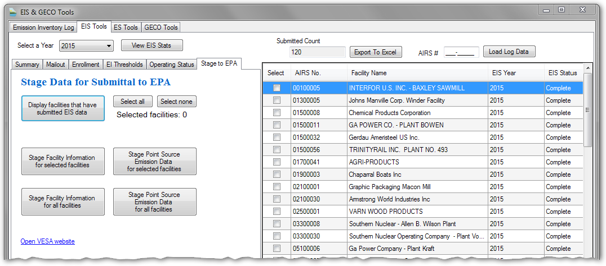
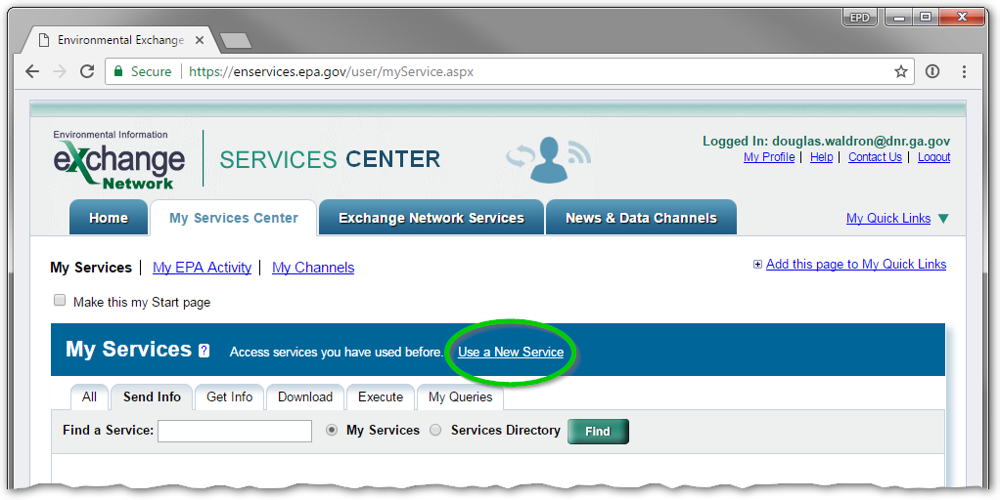
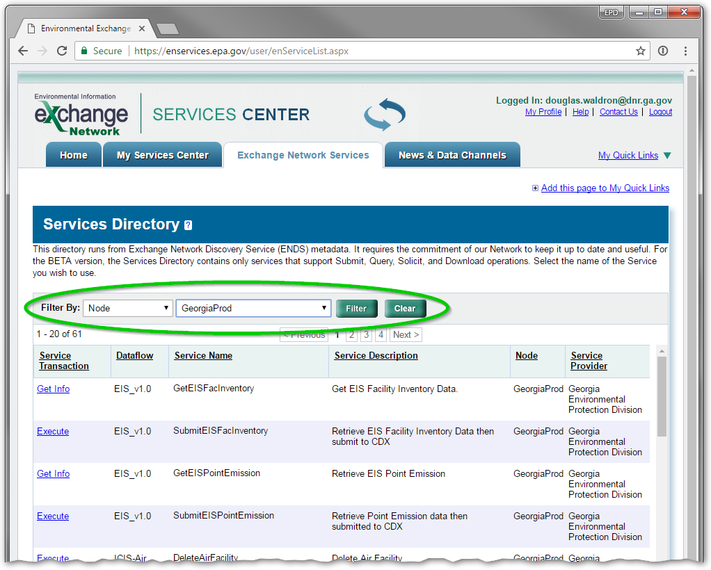
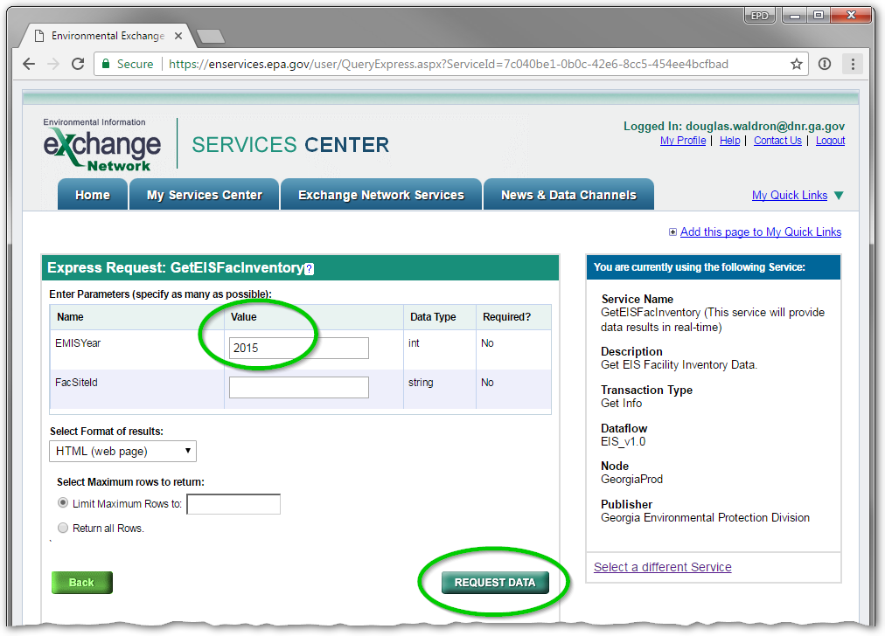

Using the Environmental Information Exchange Network to submit EIS data to EPA
Introduction
The Exchange Network is a data and services platform for sharing environmental information data between EPA, States, Territories, and Tribes. The Emissions Inventory System (EIS) is EPA’s information system for storing all current and historical emissions inventory data.
The Exchange Network Services Center (ENSC) is a web-based tool designed to allow Exchange Network users to easily use Exchange Network Services.
In the IAIP, open the EIS & GECO Tools and select the “EIS Tools” tab.
Choose the year you want to work with, and below that select the “Stage to EPA” tab. Select “Display facilities that have submitted EIS data.”
In the grid on the right, you can select one or more facilities whose data you want to submit to EPA. After selecting the desired facilities, select the buttons to stage Facility and/or Point Source data.
Alternatively, you can choose to stage data for all facilities for the selected year.
When you stage data using the IAIP EIS Tools, previous data of the same type is unstaged. For example, if you stage Facility data, any Facility data previously staged is no longer available to submit.
The IAIP EIS Tool
Submitting data (ENSC)
Log into the ENSC and select “My Services Center”. If you have used the ENSC before, this page will display services you have previously used. To access new services, select “Use a New Service”.
The ENSC Services Center
In the “Filter By” tool, select “Node,” then “GeorgiaProd” and click Filter.
ENSC: Find Services
There are four EIS services available. “GetEISFacInventory” and “GetEISPointEmission” allow you to view staged data, while “SubmitEISFacInventory” and “SubmitEISPointEmission” will submit data to EPA.
Whether you are using a Get or Submit service, you must provide the emissions inventory year in the “EMISYear” textbox. You may optionally also provide a facility site ID (AIRS number) if you wish to only view/submit data for one facility. Regardless of which service you choose, the data for the year/facility you enter must be already staged from the IAIP or no data will be submitted.
ENSC: Run a Service
If you select one of the “Get Info” services, you can choose to view the data as a web page or a downloadable XML file.
When you use one of the “Execute” (Submit) services, the submittal process is triggered, and you will shortly receive an email with the Transaction ID. The email will contain a link to the Exchange Network Web Client where you can find more information on the transaction, including a downloadable XML file of the data submitted, and an XML file documenting the XML validation results. Log into the Web Client with the same username and password as the ENSC.